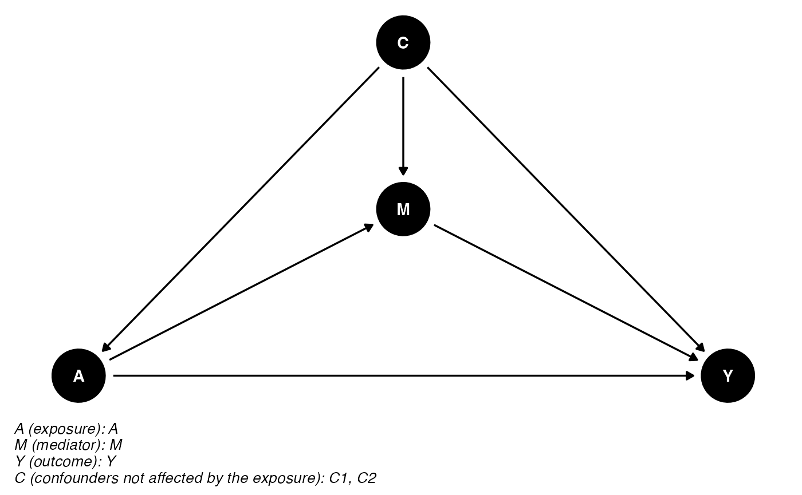
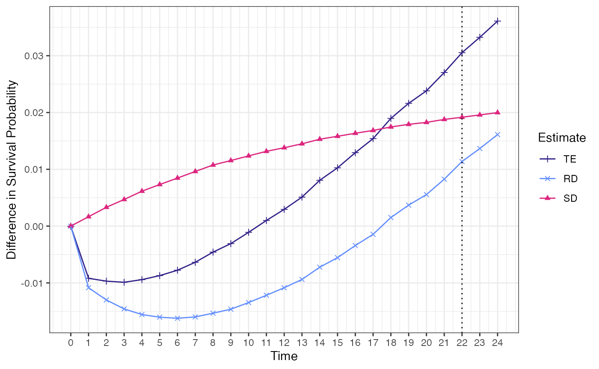
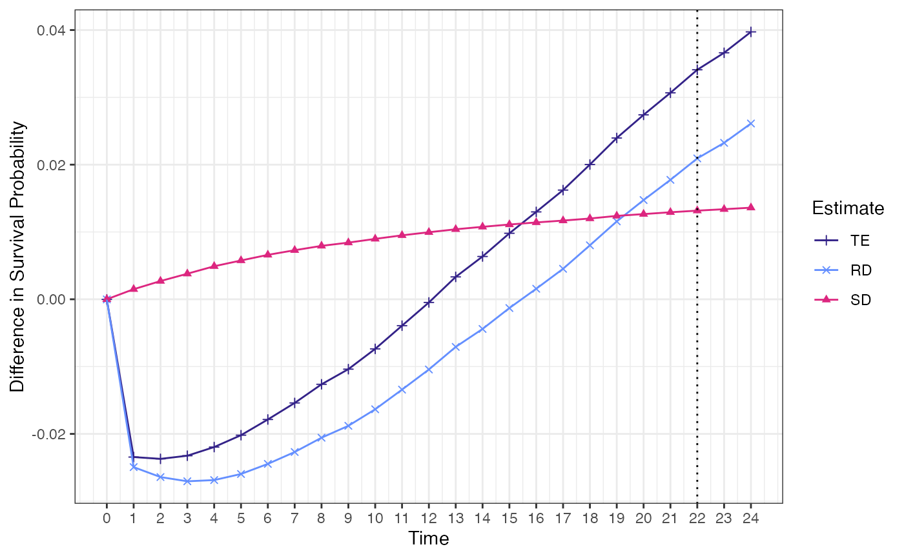

vignettes/multistate_model.Rmd
multistate_model.RmdThis example demonstrates how to use cmest when there is a time-to-event mediator. For this purpose, we simulate several situation: 1) one baseline confounder. 2) multiple baseline confounders.
Data contains a binary exposure \(A\), a time-to-event mediator \(M\), a time-to-event outcome \(Y\) and multiple types of confounders \(C^{'}\).
We can define the Total Effect (TE) with respect to the survival function. \[TE=P(S>s|A=1,C) - P(S>s|A=0,C)\] The probability of surviving after time \(s\) between \(A=1\) and \(A=0\) patients had the distribution of time to mediator \(g\) been the same across the two exposure groups is referred as \("Residual\ Disparity" (RD)\) \[RD=P(S_g>s|A=1,C) - P(S_g>s|A=0,C)\] The probability of surviving after time \(s\) for subjects in exposure group \(A=a\) for a change in the time to mediator level is referred as \("Shifting\ Distribution\ Effect" (SD)\) \[SDE=P(S_g>s|A=1,C) - P(S_{g^*}>s|A=1,C)\]
There are three transitions: \(A\) \(\rightarrow\) \(M\), \(A\) \(\rightarrow\) \(Y\) and \(M\) \(\rightarrow\) \(Y\). So we define \(\alpha_{01}(t|A,C)\), \(\alpha_{02}(t|A,C)\) and \(\alpha_{12}(t|A,C)\) as the instantaneous hazard of three transitions respectively. \(\Lambda_{01}(s|A,C)\), \(\Lambda_{02}(s|A,C)\) and \(\Lambda_{12}(s|A,C)\) are the corresponding cumulative transition intensity functions.
We specify a semi-parametric proportional intensity model for the hazard of transitions: \[\alpha_{01}(t|A,C)=\alpha_{01}^{0}(t)e^{\beta_1A+\beta_2^{'}C}\]
\[\alpha_{02}(t|A,C)=\alpha_{02}^{0}(t)e^{\gamma_1A+\gamma_2^{'}C}\]
\[\alpha_{12}(t|t^{'},A,C)=\alpha_{12}^{0}(t)e^{\delta_1A+\delta_2t^{'}+\delta_3A*t^{'}+\delta_4^{'}C}\]
## Loading required package: dplyr##
## Attaching package: 'dplyr'## The following objects are masked from 'package:stats':
##
## filter, lag## The following objects are masked from 'package:base':
##
## intersect, setdiff, setequal, union## Loading required package: mstate## Loading required package: survival## Loading required package: tidyrThe DAG for this scientific setting is:
cmdag(outcome = "Y", exposure = "A", mediator = "M",
basec = c("C1", "C2"), postc = NULL, node = TRUE, text_col = "white")
In this setting, we can use the multistate approach for stochastic interventions on a time-to event mediator in the presence of semi-competing risks. The results are shown below:
This example demonstrates how to use cmest when there are one binary exposure, categorical baseline confounder C1 and continuous basline confounder C2. For this purpose, we simulate some data containing a categorical baseline confounder \(C_1\), a continuous basline confounder \(C_2\),a binary exposure \(A\), a time-to-event \(M\) and a time-to-event outcome \(Y\). The semi-parametric proportional intensity model for the hazard of 3 transitions are:
\[\alpha_{01}(t|A,C)=\alpha_{01}^{0}(t)e^{\beta_1A+\beta_2^{'}C} = \alpha_{01}^{0}(t)e^{-0.3*A+0.4*C_1+0.5*C_2}, where\ \alpha_{01}^{0}(t) = \lambda_{01}\gamma_{01}t^{\gamma_{01}-1} = 0.1*0.8*t^{0.8-1}\]
\[\alpha_{02}(t|A,C)=\alpha_{02}^{0}(t)e^{\gamma_1A+\gamma_2^{'}C} = \alpha_{02}^{0}(t)e^{0.2*A+0.3*C_1+0.4*C_2}, where\ \alpha_{02}^{0}(t) = \lambda_{02}\gamma_{02}t^{\gamma_{02}-1} = 0.07*0.12*t^{0.12-1}\]
\[\alpha_{12}(t|t^{'},A,C)=\alpha_{12}^{0}(t)e^{\delta_1A+\delta_2t^{'}+\delta_3A*t^{'}+\delta_4^{'}C} = \alpha_{12}^{0}(t)e^{0.*4A+0*t^{'}+(-0.2)*A*t^{'}+0.5*C_1+0.6*C_2}, where\ \alpha_{12}^{0}(t) = \lambda_{12}\gamma_{12}t^{\gamma_{12}-1} = 0.1*0.5*t^{0.5-1}\]
#generate dataset
set.seed(1)
#build a function to generate time-to-event data
gen_srv <- function(n, lambda, gamma, beta, X){
X = as.matrix(X)
beta = as.matrix(beta, ncol=1)
T = (-log(runif(n)) / (lambda * exp(X %*% beta)))^(1/gamma) #weibull distribution
return(T)
}
n <- 5000
A = sample(c(0,1),replace=TRUE, size=n, c(0.7,0.3)) #binary exposure
c1 = sample(c(0,1),replace=TRUE, size=n,c(0.6, 0.4)) #binary confounder
c2 = rnorm(n, mean = 1, sd = 1) #continuous confounder
id=c(1:n)
full = data.frame(id,A,c1,c2)
M = gen_srv(n=n, lambda = 0.1,gamma = 0.8, beta = c(-0.3,0.4,0.5), X=data.frame(A,c1,c2)) #time to event mediator
Y = gen_srv(n=n, lambda = 0.07, gamma = 0.12, beta = c(0.2,0.3,0.4), X=data.frame(A,c1,c2)) #time to event outcome
data = data.frame(id = c(1:n), M = M, Y = Y)
# indicator for event
data$M_ind = ifelse(data$M <= data$Y, 1, 0)
data$Y_ind = 1
data <- merge(data,full , by = "id")
#modify Y distribution
trans_matrix = transMat(x = list(c(2, 3), c(3), c()), names = c("A", "M", "Y"))
covs = c("A","M", "c1","c2")
pre_data = msprep(time = c(NA, "M", "Y"), status = c(NA, "M_ind", "Y_ind"),
data = data, trans = trans_matrix, keep = covs)
pre_data = expand.covs(pre_data, covs, append = TRUE, longnames = FALSE)
pre_data$A_M.3 = pre_data$A.3*pre_data$M.3
# resample for T < S
data_23= pre_data[which(pre_data$trans == 3),]
data_23_tem = data.frame(id = rep(NA,dim(data_23)[1]),
new_y = rep(NA,dim(data_23)[1]))
for(i in 1:dim(data_23)[1]){
data_23_tem$id[i] = data_23$id[i]
repeat {
# do something
time_test = gen_srv(n = 1,
lambda = 0.1,
gamma = 0.5,
beta = c(as.numeric(0.4),
0,
as.numeric(0.5),
as.numeric(0.6),
as.numeric(-0.2)),
X = data_23[i, c("A.3", "M.3", "c1.3","c2.3", "A_M.3")])
# exit if the condition is met
if (time_test > data_23[i,"M.3"]) break
}
data_23_tem$new_y[i] = time_test
}
data_temp = merge(data, data_23_tem, by = "id", all = T)
#modify Y and M
data_temp$Y[which(data_temp$M_ind == 1)] = data_temp$new_y[which(data_temp$M_ind == 1)]
data_temp$M[which(data_temp$M_ind == 0)] = data_temp$Y[which(data_temp$M_ind == 0)]
data_final = data_temp
data_final$Y_day = data_final$Y*30
data_final$M_day = data_final$M*30
data_final$Y_ind[which(data_final$Y > 24)] = 0 #censored data
data_final$Y[which(data_final$Y> 24)] = 24
data_final$Y_day[which(data_final$sY_day > 24*30)] = 24*30
data_final$M_ind[which(data_final$M > 24)] = 0
data_final$M[which(data_final$M > 24)] = 24
data_final$M_day[which(data_final$M_day > 24*30)] = 24*30
data_final$A = as.factor(data_final$A) #generate a factor exposure
data = data_final %>% select(id,A,M,Y,M_ind,Y_ind,c1,c2)
surv_biE <- cmest(data = data, model = 'multistate',total_duration = 24, time_grid = 1,survival_time_fortable = 22, exposure = 'A',mediator = 'M', outcome = 'Y',
event = "Y_ind",mediator_event = "M_ind", basec = c('c1','c2'),
basecval = c('c1' = '0','c2' = '0'),astar = '0',a='1',nboot=100)
summary(surv_biE)## Causal Mediation Analysis
##
## # Multistate Model:
##
## [1] "coxph(Surv(Tstart, Tstop, status) ~ A.1 + A.2 + A.3 + c1.1 + c1.2 + c1.3 + c2.1 + c2.2 + c2.3 + A.3*M.3 + strata(trans))"
## # Multistage Model Estimation:
##
## Call:
## coxph(formula = formula, data = msdata, control = coxph.control(timefix = FALSE),
## model = TRUE, method = method)
##
## n= 13660, number of events= 6002
##
## coef exp(coef) se(coef) z Pr(>|z|)
## A.1 -0.239015 0.787403 0.036657 -6.520 7.01e-11 ***
## A.2 0.158376 1.171606 0.080433 1.969 0.048950 *
## A.3 0.524720 1.689986 0.076549 6.855 7.15e-12 ***
## c1.1 0.373070 1.452185 0.033836 11.026 < 2e-16 ***
## c1.2 0.292111 1.339251 0.076875 3.800 0.000145 ***
## c1.3 0.492009 1.635598 0.049994 9.841 < 2e-16 ***
## c2.1 0.497082 1.643918 0.017739 28.022 < 2e-16 ***
## c2.2 0.413895 1.512698 0.039296 10.533 < 2e-16 ***
## c2.3 0.583305 1.791951 0.028083 20.771 < 2e-16 ***
## M.3 0.010430 1.010485 0.008322 1.253 0.210070
## A.3:M.3 -0.196897 0.821276 0.020651 -9.535 < 2e-16 ***
## ---
## Signif. codes: 0 '***' 0.001 '**' 0.01 '*' 0.05 '.' 0.1 ' ' 1
##
## exp(coef) exp(-coef) lower .95 upper .95
## A.1 0.7874 1.2700 0.7328 0.8461
## A.2 1.1716 0.8535 1.0007 1.3717
## A.3 1.6900 0.5917 1.4545 1.9635
## c1.1 1.4522 0.6886 1.3590 1.5518
## c1.2 1.3393 0.7467 1.1519 1.5570
## c1.3 1.6356 0.6114 1.4829 1.8040
## c2.1 1.6439 0.6083 1.5877 1.7021
## c2.2 1.5127 0.6611 1.4006 1.6338
## c2.3 1.7920 0.5581 1.6960 1.8933
## M.3 1.0105 0.9896 0.9941 1.0271
## A.3:M.3 0.8213 1.2176 0.7887 0.8552
##
## Concordance= 0.64 (se = 0.004 )
## Likelihood ratio test= 1644 on 11 df, p=<2e-16
## Wald test = 1586 on 11 df, p=<2e-16
## Score (logrank) test = 1592 on 11 df, p=<2e-16
##
## # Relevant variable values:
## $a
## [1] "1"
##
## $astar
## [1] "0"
##
## $ref_table
## A M c1 c2
## 1 0 1 0 0
##
## $basecval
## c1 c2
## "0" "0"
##
## #Number of event in the data
## $Frequencies
## to
## from Start Mediator Outcome no event total entering
## Start 0 3660 702 638 5000
## Mediator 0 0 1640 2020 3660
## Outcome 0 0 0 2342 2342
##
## $Proportions
## to
## from Start Mediator Outcome no event
## Start 0.0000000 0.7320000 0.1404000 0.1276000
## Mediator 0.0000000 0.0000000 0.4480874 0.5519126
## Outcome 0.0000000 0.0000000 0.0000000 1.0000000
##
## #Point Estimation for time point of interest
## TE RD SD
## 1 0.0305422 0.01137226 0.01916994
## #SE for Point Estimation for time point of interest
## se_te se_rd se_sd
## 1 8.998994e-05 8.349577e-05 2.700766e-05
## #CI for Point Estimation for time point of interest
## TE RD SD
## 0.011042447 -0.003312541 0.014686265
## TE RD SD
## 0.04991983 0.02803755 0.02522333
## #Point Estimation table for time point of interest
## TE RD SD
## Point estimate 0.0305 0.0114 0.0192
## 95% CI (0.011, 0.0499) (-0.0033, 0.028) (0.0147, 0.0252)
ggcmest(surv_biE)
This example demonstrates how to use cmest when there are one categorical exposure, categorical baseline confounder C1 and continuous basline confounder C2. For this purpose, we simulate some data containing a categorical baseline confounder \(C_1\), a continuous basline confounder \(C_2\),a categorical exposure \(A\), a time-to-event \(M\) and a time-to-event outcome \(Y\). The semi-parametric proportional intensity model for the hazard of 3 transitions are:
\[\alpha_{01}(t|A,C)=\alpha_{01}^{0}(t)e^{\beta_1A+\beta_2^{'}C} = \alpha_{01}^{0}(t)e^{-0.3*A_1+(-0.2*A_2)+0.4*C_1+0.5*C_2}, where\ \alpha_{01}^{0}(t) = \lambda_{01}\gamma_{01}t^{\gamma_{01}-1} = 0.1*0.8*t^{0.8-1}\]
\[\alpha_{02}(t|A,C)=\alpha_{02}^{0}(t)e^{\gamma_1A+\gamma_2^{'}C} = \alpha_{02}^{0}(t)e^{0.2*A_1+0.3*A_2+0.3*C_1+0.4*C_2}, where\ \alpha_{02}^{0}(t) = \lambda_{02}\gamma_{02}t^{\gamma_{02}-1} = 0.07*0.12*t^{0.12-1}\]
\[\alpha_{12}(t|t^{'},A,C)=\alpha_{12}^{0}(t)e^{\delta_1A+\delta_2t^{'}+\delta_3A*t^{'}+\delta_4^{'}C} = \alpha_{12}^{0}(t)e^{0.4*A_1+0.3*A_2+0*t^{'}+(-0.2)*A_1*t^{'}+(-0.3)*A_2*t^{'}+0.5*C_1+0.6*C_2}, where\ \alpha_{12}^{0}(t) = \lambda_{12}\gamma_{12}t^{\gamma_{12}-1} = 0.1*0.5*t^{0.5-1}\]
#generate dataset
set.seed(1)
#build a function to generate time-to-event data
gen_srv <- function(n, lambda, gamma, beta, X){
X = as.matrix(X)
beta = as.matrix(beta, ncol=1)
T = (-log(runif(n)) / (lambda * exp(X %*% beta)))^(1/gamma) #weibull distribution
return(T)
}
n <- 10000
A = sample( c(0,1,2), size = n, replace=TRUE, prob=c(0.3,0.4,0.3))#categorical exposure
A=as.factor(A)
c1 = sample(c(0,1),replace=TRUE, size=n,c(0.6, 0.4)) #binary confounder
c2 = rnorm(n, mean = 1, sd = 1) #continuous confounder
id=c(1:n)
full = data.frame(id,A,c1,c2)
A1 = ifelse(full$A == 1, 1, 0)
A2 = ifelse(full$A == 2, 1, 0)
M = gen_srv(n=n, lambda = 0.1,gamma = 0.8, beta = c(-0.3,-0.2,0.4,0.5), X=data.frame(A1,A2,c1,c2)) #time to event mediator
Y = gen_srv(n=n, lambda = 0.07, gamma = 0.12, beta = c(0.2,0.3,0.4,0.5), X=data.frame(A1,A2,c1,c2)) #time to event outcome
data = data.frame(id = c(1:n), M = M, Y = Y)
# indicator for event
data$M_ind = ifelse(data$M <= data$Y, 1, 0)
data$Y_ind = 1
data <- merge(data,full , by = "id")
#modify Y distribution
trans_matrix = transMat(x = list(c(2, 3), c(3), c()), names = c("A", "M", "Y"))
covs = c("A","M", "c1","c2")
pre_data = msprep(time = c(NA, "M", "Y"), status = c(NA, "M_ind", "Y_ind"),
data = data, trans = trans_matrix, keep = covs)
pre_data = expand.covs(pre_data, covs, append = TRUE, longnames = FALSE)
pre_data$A1_M.3 = pre_data$A1.3*pre_data$M.3
pre_data$A2_M.3 = pre_data$A2.3*pre_data$M.3
# resample for T < S
data_23= pre_data[which(pre_data$trans == 3),]
data_23_tem = data.frame(id = rep(NA,dim(data_23)[1]),
new_y = rep(NA,dim(data_23)[1]))
for(i in 1:dim(data_23)[1]){
data_23_tem$id[i] = data_23$id[i]
repeat {
# do something
time_test = gen_srv(n = 1,
lambda = 0.1,
gamma = 0.5,
beta = c(as.numeric(0.4),
as.numeric(0.3),
0,
as.numeric(0.5),
as.numeric(0.6),
as.numeric(-0.2),
as.numeric(-0.3)),
X = data_23[i, c("A1.3","A2.3", "M.3", "c1.3","c2.3", "A1_M.3","A2_M.3")])
# exit if the condition is met
if (time_test > data_23[i,"M.3"]) break
}
data_23_tem$new_y[i] = time_test
}
data_temp = merge(data, data_23_tem, by = "id", all = T)
#modify Y and M
data_temp$Y[which(data_temp$M_ind == 1)] = data_temp$new_y[which(data_temp$M_ind == 1)]
data_temp$M[which(data_temp$M_ind == 0)] = data_temp$Y[which(data_temp$M_ind == 0)]
data_final = data_temp
data_final$Y_day = data_final$Y*30
data_final$M_day = data_final$M*30
data_final$Y_ind[which(data_final$Y > 24)] = 0 #censored data
data_final$Y[which(data_final$Y> 24)] = 24
data_final$Y_day[which(data_final$sY_day > 24*30)] = 24*30
data_final$M_ind[which(data_final$M > 24)] = 0
data_final$M[which(data_final$M > 24)] = 24
data_final$M_day[which(data_final$M_day > 24*30)] = 24*30
#data_final$A = as.factor(data_final$A) #generate a factor exposure
data_catE = data_final %>% select(id,A,M,Y,M_ind,Y_ind,c1,c2)
surv_catE <- cmest(data = data_catE, model = 'multistate',total_duration = 24, time_grid = 1,survival_time_fortable = 22, exposure = 'A',mediator = 'M', outcome = 'Y',
event = "Y_ind",mediator_event = "M_ind", basec = c('c1','c2'),
basecval = c('c1' = '0','c2' = '0'),astar = '0',a='2',nboot=100)
summary(surv_catE)## Causal Mediation Analysis
##
## # Multistate Model:
##
## [1] "coxph(Surv(Tstart, Tstop, status) ~ A1.1 + A1.2 + A1.3 + A2.1 + A2.2 + A2.3 + c1.1 + c1.2 + c1.3 + c2.1 + c2.2 + c2.3 + A1.3*M.3 + A2.3*M.3 + strata(trans))"
## # Multistage Model Estimation:
##
## Call:
## coxph(formula = formula, data = msdata, control = coxph.control(timefix = FALSE),
## model = TRUE, method = method)
##
## n= 26711, number of events= 11203
##
## coef exp(coef) se(coef) z Pr(>|z|)
## A1.1 -0.3277674 0.7205306 0.0289873 -11.307 < 2e-16 ***
## A1.2 0.1618408 1.1756730 0.0583132 2.775 0.00551 **
## A1.3 0.3003392 1.3503167 0.0614644 4.886 1.03e-06 ***
## A2.1 -0.2010490 0.8178723 0.0312703 -6.429 1.28e-10 ***
## A2.2 0.3346746 1.3974856 0.0604423 5.537 3.08e-08 ***
## A2.3 0.3314519 1.3929892 0.0681263 4.865 1.14e-06 ***
## c1.1 0.3899606 1.4769226 0.0249918 15.604 < 2e-16 ***
## c1.2 0.3874666 1.4732437 0.0464446 8.343 < 2e-16 ***
## c1.3 0.5001797 1.6490176 0.0397375 12.587 < 2e-16 ***
## c2.1 0.4906978 1.6334556 0.0134728 36.421 < 2e-16 ***
## c2.2 0.5040927 1.6554829 0.0237299 21.243 < 2e-16 ***
## c2.3 0.5753703 1.7777887 0.0224522 25.626 < 2e-16 ***
## M.3 -0.0004653 0.9995349 0.0088987 -0.052 0.95830
## A1.3:M.3 -0.1813485 0.8341446 0.0156937 -11.555 < 2e-16 ***
## A2.3:M.3 -0.2763646 0.7585364 0.0224230 -12.325 < 2e-16 ***
## ---
## Signif. codes: 0 '***' 0.001 '**' 0.01 '*' 0.05 '.' 0.1 ' ' 1
##
## exp(coef) exp(-coef) lower .95 upper .95
## A1.1 0.7205 1.3879 0.6807 0.7627
## A1.2 1.1757 0.8506 1.0487 1.3180
## A1.3 1.3503 0.7406 1.1971 1.5232
## A2.1 0.8179 1.2227 0.7693 0.8696
## A2.2 1.3975 0.7156 1.2414 1.5732
## A2.3 1.3930 0.7179 1.2189 1.5920
## c1.1 1.4769 0.6771 1.4063 1.5511
## c1.2 1.4732 0.6788 1.3451 1.6136
## c1.3 1.6490 0.6064 1.5255 1.7826
## c2.1 1.6335 0.6122 1.5909 1.6772
## c2.2 1.6555 0.6041 1.5802 1.7343
## c2.3 1.7778 0.5625 1.7013 1.8578
## M.3 0.9995 1.0005 0.9823 1.0171
## A1.3:M.3 0.8341 1.1988 0.8089 0.8602
## A2.3:M.3 0.7585 1.3183 0.7259 0.7926
##
## Concordance= 0.652 (se = 0.003 )
## Likelihood ratio test= 3443 on 15 df, p=<2e-16
## Wald test = 3234 on 15 df, p=<2e-16
## Score (logrank) test = 3286 on 15 df, p=<2e-16
##
## # Relevant variable values:
## $a
## [1] "2"
##
## $astar
## [1] "0"
##
## $ref_table
## A M c1 c2
## 1 0 1 0 0
##
## $basecval
## c1 c2
## "0" "0"
##
## #Number of event in the data
## $Frequencies
## to
## from Start Mediator Outcome no event total entering
## Start 0 6711 1902 1387 10000
## Mediator 0 0 2590 4121 6711
## Outcome 0 0 0 4492 4492
##
## $Proportions
## to
## from Start Mediator Outcome no event
## Start 0.0000000 0.6711000 0.1902000 0.1387000
## Mediator 0.0000000 0.0000000 0.3859335 0.6140665
## Outcome 0.0000000 0.0000000 0.0000000 1.0000000
##
## #Point Estimation for time point of interest
## TE RD SD
## 1 0.03409689 0.02092829 0.0131686
## #SE for Point Estimation for time point of interest
## se_te se_rd se_sd
## 1 6.985263e-05 6.65853e-05 2.241292e-05
## #CI for Point Estimation for time point of interest
## TE RD SD
## 0.021939443 0.009187043 0.008910369
## TE RD SD
## 0.04697333 0.03343425 0.01718215
## #Point Estimation table for time point of interest
## TE RD SD
## Point estimate 0.0341 0.0209 0.0132
## 95% CI (0.0219, 0.047) (0.0092, 0.0334) (0.0089, 0.0172)
ggcmest(surv_catE)